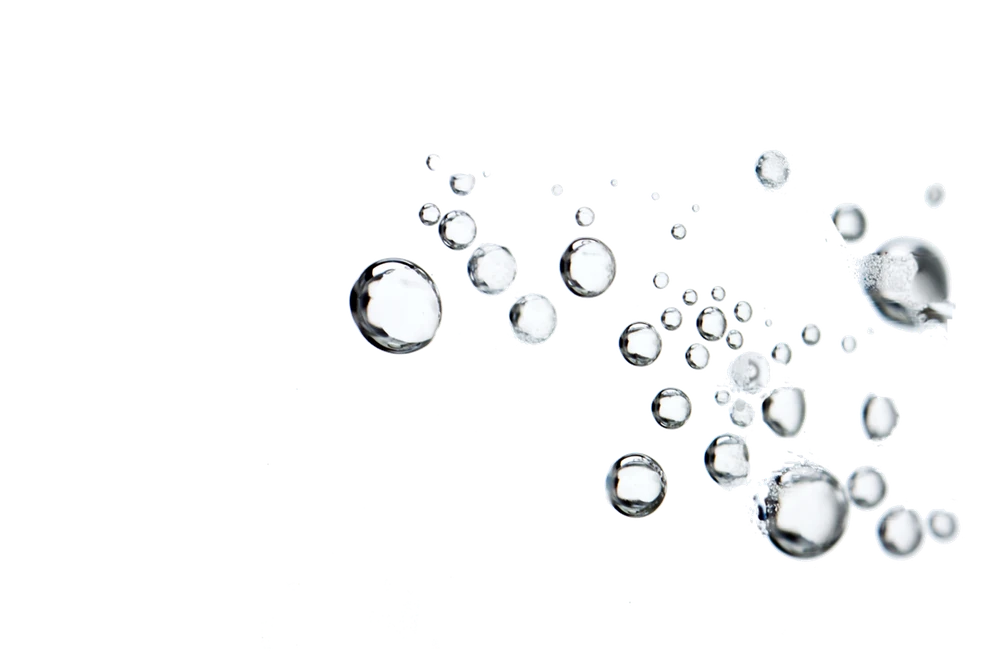
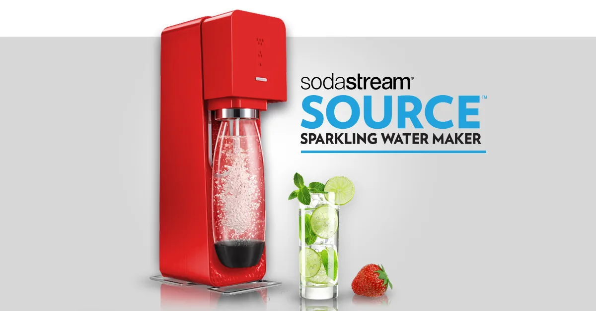
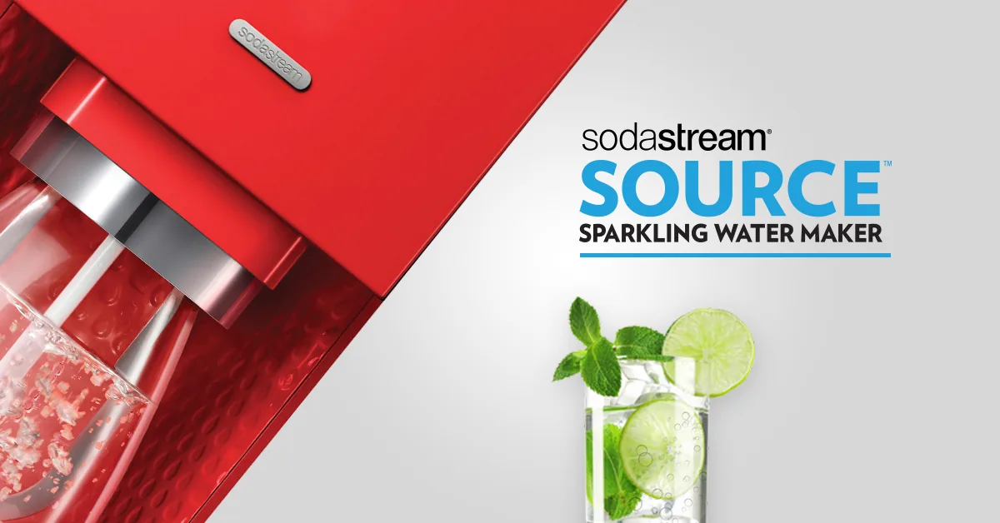
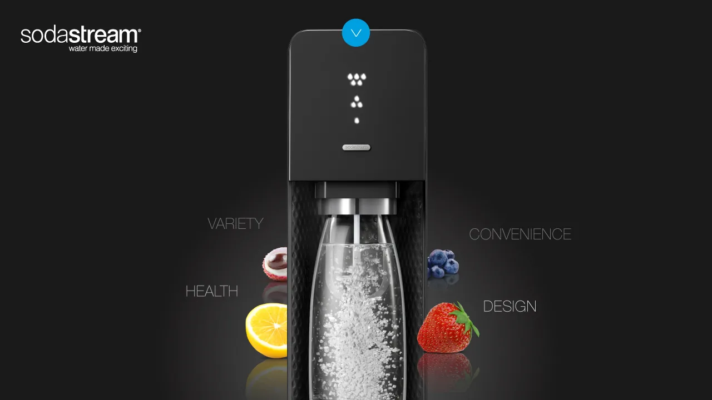
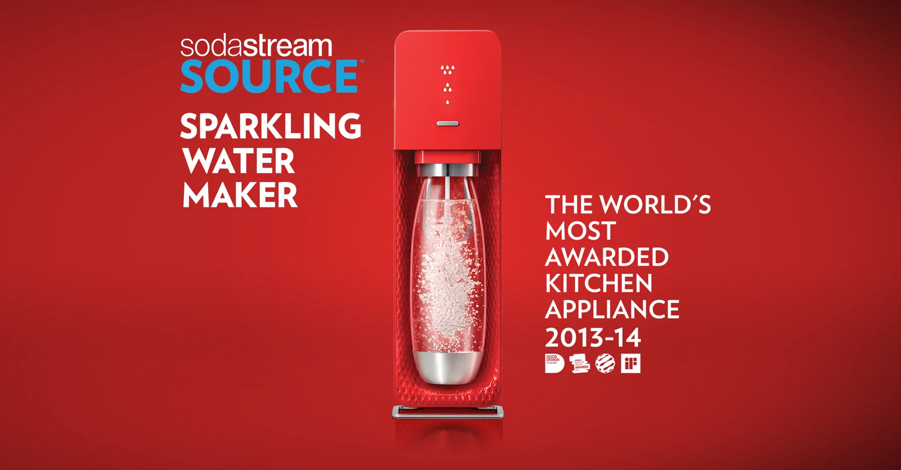
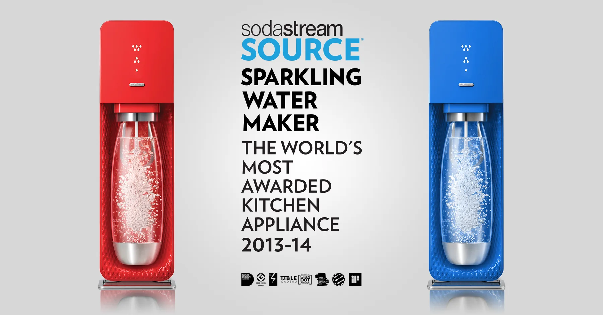
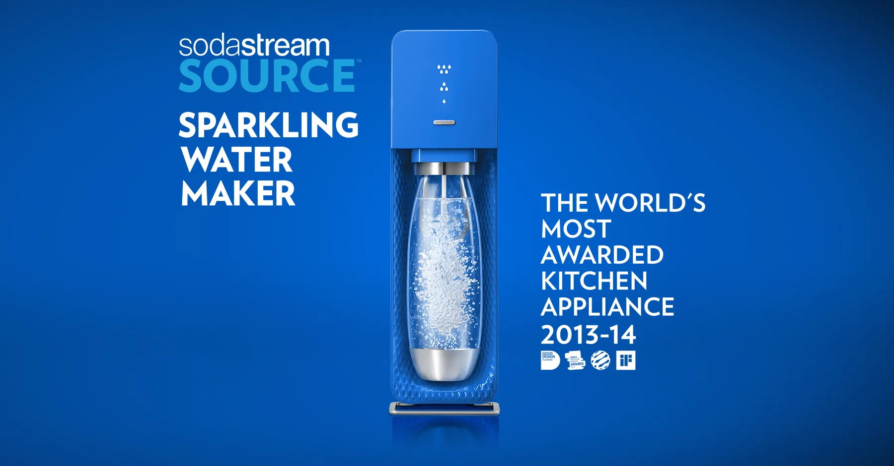
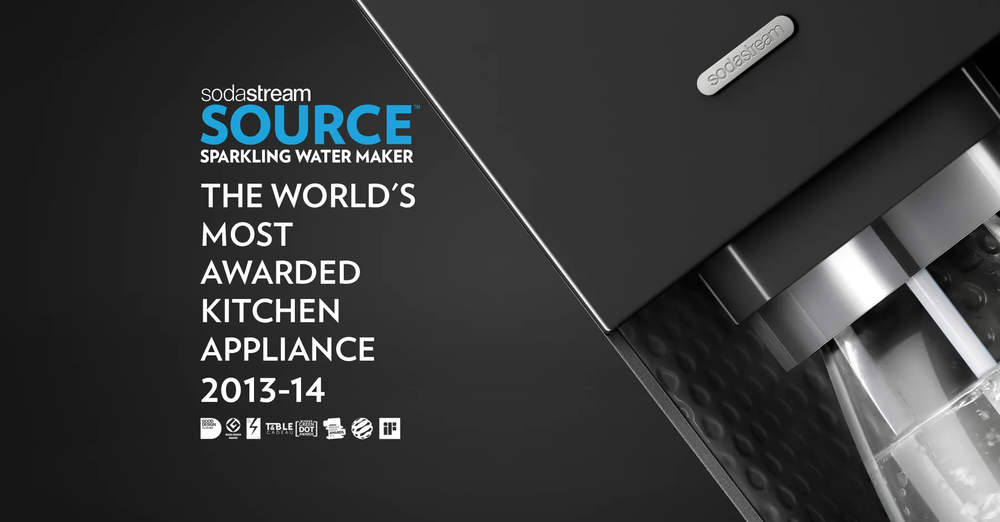
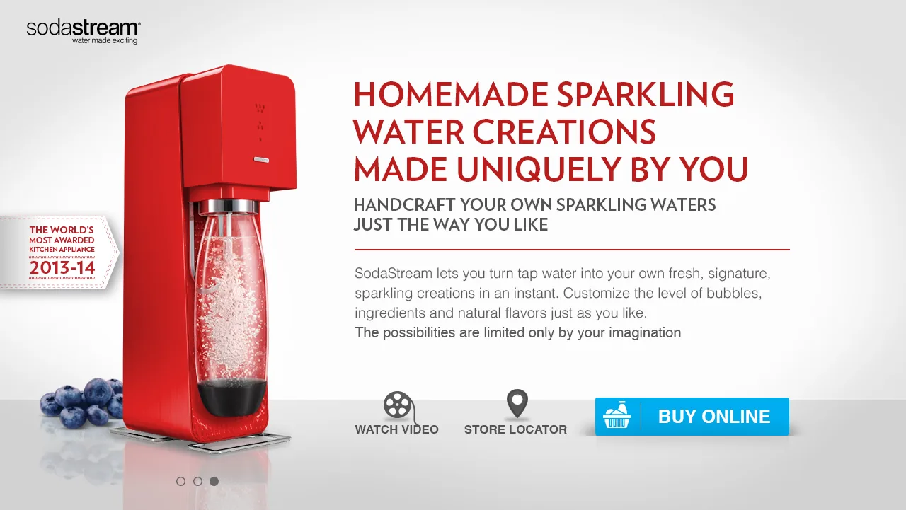
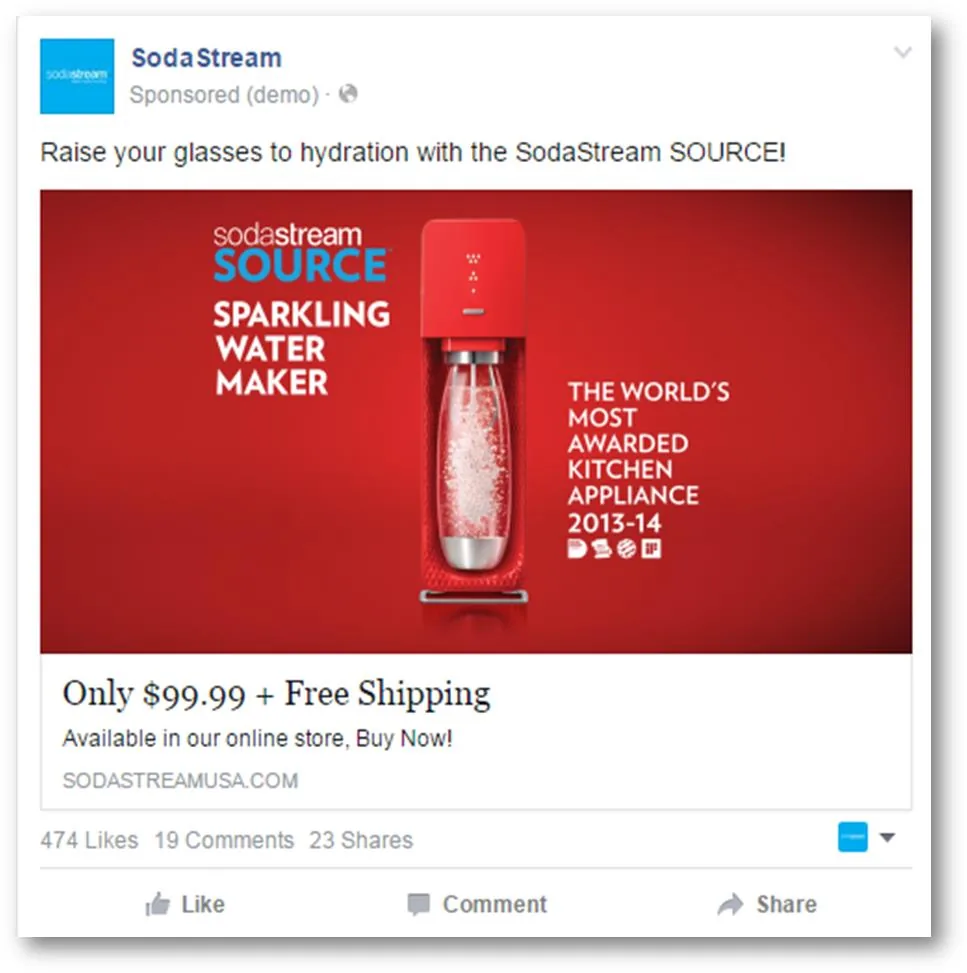

Make itfizz.
A social media campaign for SodaStream USA, built around the SOURCE sparkling water maker: campaign visuals, animated banners, a landing page and social ads, designed to make a kitchen appliance feel as fresh as the water it makes.

One machine. Red in front, blue behind the type.
The SOURCE leads every frame: a glossy machine, a clean bottle full of bubbles and a lime-and-mint glass for the promise of what comes out of it. The brand blue carries the wordmark and the tagline.



Campaign key visuals: the red SOURCE, and the black SOURCE with its four benefits (health, variety, convenience, design).
Pick a colour. The whole frame follows.
Each machine colour re-tints the entire layout: the backdrop, the type and the award line stay the same, so the campaign scales across variants without feeling repeated.




From the feed to the checkout.
The same visual language carries into the landing page and the sponsored post, so the click lands on exactly what the ad promised.

